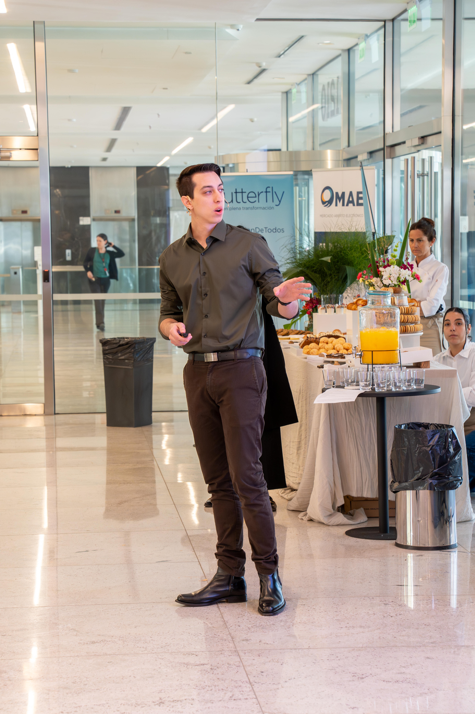
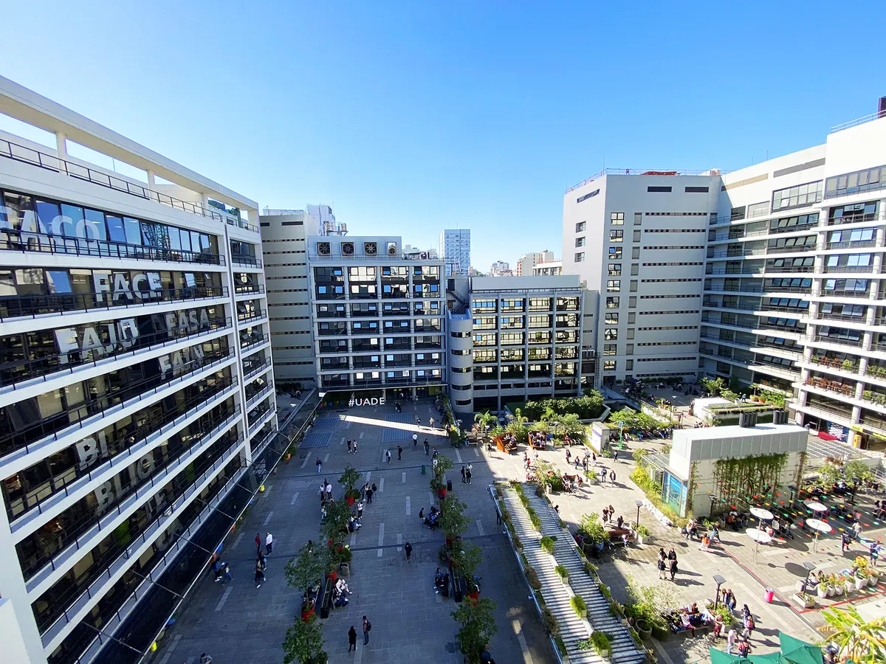

Sobre mí
En esta sección comparto un poco de mi recorrido personal y profesional. Me interesa combinar creatividad, organización y una mirada actual sobre los proyectos que construyo. Tanto en el mundo del vino como en tecnología, busco que cada idea tenga identidad, una estructura clara y una forma genuina de conectar con otras personas.
Mi proyecto

|
Valmorè es uno de los proyectos que mejor representa mi forma de pensar y crear. Nace desde el gusto por compartir vino, por cuidar los detalles y por desarrollar una propuesta con estética, personalidad y una experiencia propia. Empezar con este Malbec 2023 fue una forma de transformar una idea en algo concreto, visual y disfrutable. |
Mi experiencia como PM
|
En mi recorrido laboral me desarrollo como PM, coordinando equipos interdisciplinarios y ayudando a ordenar procesos, tiempos y objetivos. Me gusta trabajar con una mirada práctica, apoyándome en guías, nuevas tecnologías y herramientas que permitan gestionar mejor cada proyecto. Mi forma de liderar busca unir organización, comunicación clara y capacidad para convertir ideas en avances reales. Ver LinkedIn |
 |
Mi paso por UADE

También forma parte de mi historia mi paso por UADE, una etapa importante en mi formación y en mi manera de pensar proyectos con una base más sólida. Mi recorrido académico me ayudó a fortalecer una mirada que combina negocio, tecnología y desarrollo web, con ganas de seguir aprendiendo y construyendo ideas propias.
Ir a la web principal